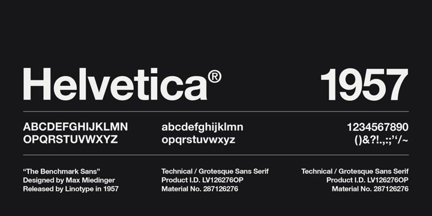

Helvetica or Neue Haas Grotesk is a widely used sans-serif typeface developed in 1957 by Swiss typeface designer Max Miedinger with input from Eduard Hoffmann.
Helvetica is a neo-grotesque design, one influenced by the famous 19th century (1890s) typeface Akzidenz-Grotesk and other German and Swiss designs.[2] Its use became a hallmark of the International Typographic Style that emerged from the work of Swiss designers in the 1950s and '60s, becoming one of the most popular typefaces of the mid-20th century.[3] Over the years, a wide range of variants have been released in different weights, widths, and sizes, as well as matching designs for a range of non-Latin alphabets. Notable features of Helvetica as originally designed include a high x-height, the termination of strokes on horizontal or vertical lines and an unusually tight spacing between letters, which combine to give it a dense, solid appearance. 